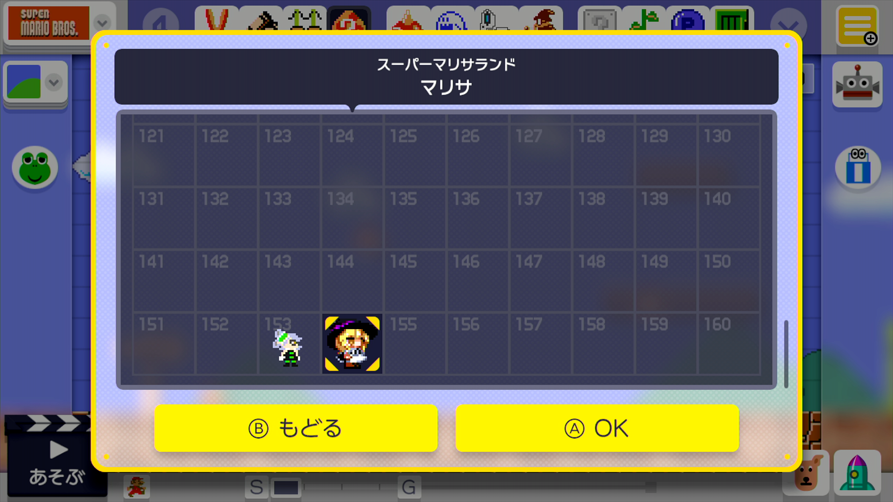

Since: 02-07-18
From: Japan |
Successfully added Costume Mario which originally does not exist in Super Mario Maker You can add it by editing BossXXXX.pack and Static.pack The added Costume Mario is available at Easy 100 Mario Challenge screenshots  Videos _________________________  |
|
Posted on 10-02-18, 09:59 am
|

Since: 12-08-17
From: Canada |
You added a costume, that's really cool ! |
|
Posted on 10-02-18, 11:14 am
|

tee

I'm tea. Live with it.
Since: 01-16-18
From: Chemical Plant Zone |
Oh my goodness, you have to make a tutorial for this.. _________________________ Discord - tee#0151 Twitter - @teebeeYT WiiU - beetle857 Switch - SW-1142-1551-7831 |
|
Posted on 10-02-18, 09:43 pm
|

Since: 02-07-18
From: Japan |
How to add Custom Costume Mario 1 Extract BossXXX.pack 2 Expand CharaMario_BossXXX.bars 3 in down.bfwav appeal.bfwav goal.bfwav Replace jump.bfwav with bfwav converted 3.5 bfwav is created with NW4F_WaveConverter 5 Recompress CharaMario_BossXXX with sarctool 6 Expand CharaMario_BossXXX_ZZzz.szs 7 Open CharaMario.msbt in CharaMario_BossXXX_ZZzz with kuriimu etc. 8 Edit Name and Title 9 Recompress CharaMario_BossXXX_ZZzz in szs format 10 Expand M1_Item_BossXXX.szs and M1_Player_Chara_BossXXX.szs 11 Open bfres file with bfrestool 12 Edit the dds file that came out with Paint.net etc. 13 Open bfres with bfrestool and import the dds file 14 Recompress M1_Item_BossXXX and M1_Player_Chara_BossXXX in szs format 15 Delete the remaining folder 16 Expand Static.pack 17 Combine Static / Mush / Boss_CharaMarioAmiiboTable.byaml with yamlconv.exe 18 Open Boss_CharaMarioAmiiboTable.xml with a text editor 17 Add it under the bottom Boss 051 <value NumberingID = "- 1" Rare = "1" SeriesID = "- 1"> <CharacterID_Base type = "string"> 0x0803 </ CharacterID_Base> <CharacterID_Detail type = "string"> - 1 </ CharacterID_Detail> <PackName type = "string"> Boss 052 </ PackName> </ value> 17.5 Increase the number by 1 each time you add Costume Mario 18 Save Boss_CharaMarioAmiiboTable.xml and drag and drop it to yamlconv.exe 19 Delete Boss_CharaMarioAmiiboTable.xml 20 Recompress the Static folder with sarctool 21 Recompress the BossXXX folder with sarctool 22 Rename BossXXX.sarc to BossXXX.pack 23 Copy BossXXX.pack and rename it to BossStaticXXX.pack 24 Insert BossXXX.pack and BossStaticXXX.pack into the Super Mario Maker titleID / MOD / content / BossNfp SD card 25 Insert Static.pack into the Super Mario Maker titleID / MOD / content / pack SD card 26 Start sdcafiine from Haxchl etc. 27 Start Super Mario Maker 28 Clear the Easy of 100 Mario Challenge of the Course World 29 After clearing Custom Costume Mario will be added if successful _________________________ |
|
Posted on 10-06-18, 09:31 am
|